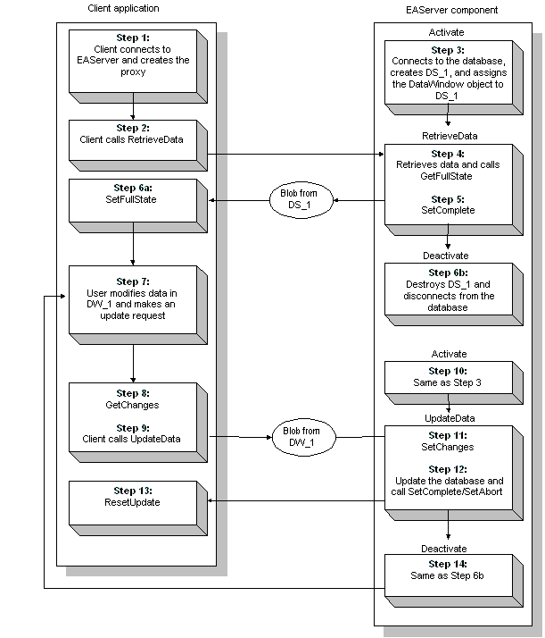

You can access a database from an EAServer component. If you want to take advantage of EAServer's support for connection pooling and transaction management, you need to use one of the database interfaces supported by EAServer to connect to your database. For more information about EAServer database connections for components developed in PowerBuilder, see Connecting to Your Database .
EAServer components developed in PowerBuilder can use DataStores to interact with the database. DataStores are nonvisual DataWindow controls. DataStores act just like DataWindow controls except that they do not have visual attributes.
DataStores can be useful in a distributed application: they give you the ability to perform database processing on a remote server instead of on each client machine.
 RichText presentation style is not supported A server component
cannot contain a DataStore that has a DataWindow object that uses
the RichText presentation style. Rich text processing is not supported in
distributed applications.
RichText presentation style is not supported A server component
cannot contain a DataStore that has a DataWindow object that uses
the RichText presentation style. Rich text processing is not supported in
distributed applications.
If you want to provide a visual interface to the data retrieved on the server, include a window in the client that has a DataWindow control. Whenever data is retrieved on the server, refresh the DataWindow control to show the result set for the DataStore on the server. Similarly, whenever the user makes modifications to the data on the client, refresh the contents of the DataStore on the server to reflect the current state of the DataWindow control on the client.
To share data between a client and a server, synchronize the server DataStore and the client DataWindow control programmatically. If you want your application to handle database updates, this involves moving the DataWindow data buffers and status flags back and forth between the client and the server.
For more information about synchronizing a server DataStore with a client DataWindow, see "Performing updates".
 ShareData function is not supported in distributed
applications You cannot use the ShareData function to
share data between a DataWindow control on a client and a DataStore
on a server.
ShareData function is not supported in distributed
applications You cannot use the ShareData function to
share data between a DataWindow control on a client and a DataStore
on a server.
To optimize database processing, EAServer provides support for connection caching. Connection caching allows EAServer components to share pools of preallocated connections to a remote database server, avoiding the overhead imposed when each instance of a component creates a separate connection. By establishing a connection cache, a server can reuse connections made to the same data source.
Ordinarily, when a PowerBuilder application connects to a database, PowerBuilder physically terminates each database connection for which a DISCONNECT statement is issued. By contrast, when a PowerBuilder component uses an EAServer connection cache, EAServer logically terminates the database connection but does not physically remove the connection. Instead, the database connection is kept open in the connection cache so that it can be reused for other database operations.
 Do not disconnect in destructor event EAServer releases all connection
handles to the cache when a transaction is completed or when the
component is deactivated. If you place a DISCONNECT statement
in the destructor event, which is triggered after the deactivate
event, the connection has already been logically terminated and
the DISCONNECT causes a physical termination. DISCONNECT statements
can be placed in the deactivate event.
Do not disconnect in destructor event EAServer releases all connection
handles to the cache when a transaction is completed or when the
component is deactivated. If you place a DISCONNECT statement
in the destructor event, which is triggered after the deactivate
event, the connection has already been logically terminated and
the DISCONNECT causes a physical termination. DISCONNECT statements
can be placed in the deactivate event.
All connections in a cache must share a common user name, password, server name, and connectivity library.
If you want to retrieve a connection from the cache that uses a specified set of user name, password, server, and connectivity library values, you do not need to modify your database access code to enable it to use the cache. You simply need to create a new cache in EAServer Manager that has the database connection properties (user name, password, server name, and connectivity library) required by the component. At runtime, when the component tries to connect to the database, EAServer automatically returns a connection from the cache that matches the connection values requested by the component.
If you want to retrieve a connection from a cache by specifying the cache name, set the CacheName DBParm to identify the cache you want to use. Accessing a cache by name allows you to change the user name, password, or server in EAServer Manager without requiring corresponding changes to your component source code.
 Enabling cache-by-name access To access a cache by name, select the Enable Cache-By-Name
Access option for the cache in EAServer Manager. By default, this
option is not selected.
Enabling cache-by-name access To access a cache by name, select the Enable Cache-By-Name
Access option for the cache in EAServer Manager. By default, this
option is not selected.
This code for a PowerBuilder component shows how to access a cache by name:
SQLCA.DBMS = "ODBC"
SQLCA.Database = "EAS Demo DB"
SQLCA.AutoCommit = FALSE
SQLCA.DBParm = "ConnectString='DSN=EAS Demo DB;
UID=dba;PWD=sql',CacheName='mycache'"
 Cache names are case-sensitive Cache names are case-sensitive; therefore, make sure the case
of the cache name you specify in your script matches the case used
for the name in EAServer.
Cache names are case-sensitive Cache names are case-sensitive; therefore, make sure the case
of the cache name you specify in your script matches the case used
for the name in EAServer.
Regardless of whether you access a cache by user or name, you can retrieve a connection by proxy. Retrieving a connection by proxy means that you can assume the identity and privileges of another user by providing an alternative login name.
This feature can be used with any database that recognizes the SQL command set session authorization. In order for user A to use the ProxyUserName DBParm to assume the identity of another user B, user A must have permission to execute this statement. For example, for ASA, user A must have DBA authority, and for ASE, user A must have been granted permission to execute set session authorization by a System Security Officer.
For more information about the PowerBuilder database interfaces that support proxy connections, see Connecting to Your Database .
To use proxy connections, set the ProxyUserName DBParm to identify the alternative login name. This example shows how to retrieve a connection by proxy:
SQLCA.DBMS = "ODBC"
SQLCA.DBParm = "CacheName='MyEAServerCache',
UseContextObject='Yes',ProxyUserName='pikachu'"
 Before you can use a connection by proxy Set-proxy support must be enabled in the cache properties
file before components can take advantage of it. EAServer Manager does not automatically
create an individual cache properties file when you create a cache,
so you must create this file manually. Name the file cachename.props and
put it in the EAServer\Repository\ConnCache directory.
Once you have created the cache properties file, add the following
line:
Before you can use a connection by proxy Set-proxy support must be enabled in the cache properties
file before components can take advantage of it. EAServer Manager does not automatically
create an individual cache properties file when you create a cache,
so you must create this file manually. Name the file cachename.props and
put it in the EAServer\Repository\ConnCache directory.
Once you have created the cache properties file, add the following
line:
com.sybase.jaguar.conncache.ssa=trueFor this setting to take effect, you must refresh EAServer. For more information on managing connection caches, see the EAServer System Administration Guide . You must also set up your database server to recognize and give privileges to the alternative login name defined in the ProxyUserName DBParm.
You can control what happens if all connections in a cache are in use. To do this, set the GetConnectionOption DBParm to one of the following values:
By default, PowerBuilder uses JAG_CM_FORCE.
You can also control what happens when a connection is released. To do this, set the ReleaseConnectionOption DBParm to one of the following values:
By default, PowerBuilder uses JAG_CM_UNUSED.
The following EAServer native connection caches support Unicode connections for PowerBuilder components:
These connection cache types accept Unicode connection parameters and then send a request to the database driver to open a Unicode connection to the database. With a Unicode connection, PowerBuilder components can communicate with the database using Unicode.
If you are using the Oracle9i native interface (O90) to access an Oracle9i database in a PowerBuilder component in EAServer, use the database driver type OCI_9U for the connection cache. If you do not, access will fail.
For an ODBC connection cache, use the database driver type ODBCU to access multiple-language data in an ASA Unicode database or DBCS data in an ASA DBCS database and set the database parameter ODBCU_CONLIB to 1. For example:
SQLCA.DBParm = "CacheName='EASDemo_u',
UseContextObject='Yes',ODBCU_CONLIB=1"
To use a DataStore to perform retrieval operations, you first need to create an instance of the DataStore object in a script and assign the DataWindow object to the DataStore. Then set the Transaction object for the DataStore. Once these setup steps have been performed, you can retrieve data into the DataStore, print the contents of the DataStore, or perform other processing against a retrieved result set.
This example demonstrates the use of a DataStore to retrieve data in a server component. The server component uo_customers has a function called retrieve_custlist. retrieve_custlist generates an instance of the DataStore ds_datastore and then uses this DataStore to retrieve all of the rows in the Customer table. Once the data has been retrieved, retrieve_custlist passes the data back to the client application.
The retrieve_custlist function has an argument called customers, which is defined as an array based on the structure st_custlist. The structure st_custlist has the same layout as d_custlist, the DataWindow object used to access the database. The return value for retrieve_custlist, which is used to return the number of rows retrieved, is of type Long.
Here is the signature of the retrieve_custlist function:
retrieve_custlist( REF st_custlist customers [] ) returns long
Here is the script for the retrieve_custlist function:
datastore ds_datastore
long ll_rowcount
ds_datastore = create datastore
ds_datastore.dataobject = "d_custlist"
ds_datastore.SetTransObject (SQLCA)
IF ds_datastore.Retrieve() <> -1 THEN
ll_rowcount = ds_datastore.RowCount()
END IF
customers = ds_datastore.object.data
destroy ds_datastore
return ll_rowcount
At the conclusion of processing, the function retrieve_custlist destroys the DataStore and returns the number of rows retrieved back to the client.
In a conventional client/server application, where database updates are initiated by a single application running on a client machine, PowerBuilder can manage DataWindow state information for you automatically. In a distributed application, the situation is somewhat different. Because application components are partitioned between the client and the server, you need to write logic to ensure that the data buffers and status flags for the DataWindow control on the client are synchronized with those for the DataStore on the server.
PowerBuilder provides four functions for synchronizing DataWindows and DataStores in a distributed application:
Although these functions are most useful in distributed applications, they can also be used in nondistributed applications where multiple DataWindows (or DataStores) must be synchronized.
To synchronize a DataWindow control on the client with a DataStore on the server, move the DataWindow data buffers and status flags back and forth between the client and the server whenever changes occur. The procedures for doing this are essentially the same whether the source of the changes resides on the client or the server.
To apply complete state information from one DataWindow (or DataStore) to another, you need to:
To apply changes from one DataWindow (or DataStore) to another, you need to:
 SetChanges can be applied to an empty DataWindow You can call SetChanges to apply changes
to an empty DataWindow (or DataStore). The target DataWindow does
not need to contain a result set from a previous retrieval operation.
However, the DataWindow must have access to the DataWindow definition.
This means that you need to assign the DataWindow object to the
target DataWindow before calling SetChanges.
SetChanges can be applied to an empty DataWindow You can call SetChanges to apply changes
to an empty DataWindow (or DataStore). The target DataWindow does
not need to contain a result set from a previous retrieval operation.
However, the DataWindow must have access to the DataWindow definition.
This means that you need to assign the DataWindow object to the
target DataWindow before calling SetChanges.
When you call GetFullState or GetChanges, PowerBuilder returns DataWindow state information in a Blob. The Blob returned from GetFullState provides everything required to recreate the DataWindow, including the data buffers, status flags, and complete DataWindow specification. The Blob returned from GetChanges provides data buffers and status flags for changed and deleted rows only.
By default, the Update function resets the update flags after a successful update. Therefore, when you call the Update function on the server, the status flags are automatically reset for the server DataStore. However, the update flags for the corresponding client DataWindow control are not reset. Therefore, if the Update function on the server DataStore succeeds, call ResetUpdate on the client DataWindow to reset the flags.
You can synchronize a single source DataWindow (or DataStore) with a single target DataWindow (or DataStore). Do not try to synchronize a single source with multiple targets, or vice versa.
Suppose the server has a component that uses a DataStore called DS_1. This DataStore is the source of data for a target DataWindow called DW_1 on the client. In the Activate event, the component connects to the database, creates a DataStore, and assigns the DataWindow object to the DataStore.
In one of its methods, the server component issues a Retrieve function for DS_1, calls GetFullState on DS_1, and then passes the resulting Blob to the client. Because the component's Automatic Demarcation/Deactivation setting is disabled, it also calls SetComplete before the method returns to cause the component instance to be deactivated.
 If Automatic Demarcation/Deactivation were
enabled If the Automatic Demarcation/Deactivation setting
were enabled for the component, it would not need to call SetComplete after
the retrieval because the component instance would automatically
be deactivated when the method finished execution.
If Automatic Demarcation/Deactivation were
enabled If the Automatic Demarcation/Deactivation setting
were enabled for the component, it would not need to call SetComplete after
the retrieval because the component instance would automatically
be deactivated when the method finished execution.
Once the client has the DataWindow Blob, it calls SetFullState to apply the state information from the Blob to DW_1. At this point, the user can insert new rows in DW_1 and change or delete some of the existing rows. When the user makes an update request, the client calls GetChanges and invokes another component method that passes the resulting Blob back to the server. The component method then calls SetChanges to apply the changes from DW_1 to DS_1. After synchronizing DS_1 with DW_1, the server component updates the database and calls SetComplete or SetAbort to indicate whether the update was successful.
If the update was successful, the client calls ResetUpdate to reset the status flags on the client DataWindow.

After the completion of the first update operation, the client and server can pass change Blob results (rather than complete state information) back and forth to handle subsequent updates. From this point on, the update process is an iterative cycle that begins with Step 7 and concludes with Step 14.
The following example shows how you might synchronize DataWindows between a PowerBuilder client and an EAServer component. This example uses a stateless component.
Suppose the client has a window called w_employee that has buttons that allow the user to retrieve and update data. The Retrieve button on the client window has the following script:
// Global variable:
// connection myconnect
// Instance variable:
// uo_employee iuo_employee
blob lblb_data
long ll_rv
myconnect.CreateInstance(iuo_employee)
iuo_employee.RetrieveData(lblb_data)
ll_rv = dw_employee.SetFullState(lblb_data)
if ll_rv = -1 then
MessageBox("Error", "SetFullState call failed!")
end if
The Update button on the client window has the following script:
blob lblb_data
long ll_rv
ll_rv = dw_employee.GetChanges(lblb_data)
if ll_rv = -1 then
MessageBox("Error", "GetChanges call failed!")
else
if iuo_employee.UpdateData(lblb_data) = 1 then &
dw_employee.ResetUpdate()
end if
The server has an object called uo_employee that has the following functions:
The uo_employee object has these instance variables:
protected TransactionServer ts
protected DataStore ids_datastore
The Activate event for the uo_employee object instantiates the TransactionServer service. In addition, it connects to the database and creates the DataStore that will be used to access the database:
this.GetContextService("TransactionServer", ts)
SQLCA.DBMS="ODBC"
SQLCA.DBParm="ConnectString=
'DSN=EAS Demo DB;UID=dba;PWD=sql',
UseContextObject='Yes'"
CONNECT USING SQLCA;
IF SQLCA.SQLCode < 0 THEN
//Handle the error
END IF
ids_datastore = CREATE datastore
ids_datastore.dataobject = "d_emplist"
ids_datastore.SetTransObject (SQLCA)
The RetrieveData function takes an argument called ablb_data, which is a Blob passed by reference. The function returns a Long value.
Here is the script for the RetrieveData function:
long ll_rv
ids_datastore.Retrieve()
ll_rv = ids_datastore.GetFullState(ablb_data)
ts.SetComplete()
return ll_rv
The UpdateData function takes an argument called ablb_data, which is a Blob passed by reference. The function returns a Long value.
Here is the script for the UpdateData function:
long ll_rv
if ids_datastore.SetChanges(ablb_data) = 1 then
ll_rv = ids_datastore.Update()
end if
if ll_rv = 1 then
ts.SetComplete()
else
ts.SetAbort()
end if
return ll_rv
The Deactivate event for the uo_employee object destroys the DataStore and disconnects from the database:
DESTROY ids_datastore
DISCONNECT USING SQLCA;
PowerBuilder provides two system objects to handle getting result sets from components running in EAServer and returning result sets from PowerBuilder user objects running as EAServer components. These system objects, ResultSet and ResultSets, are designed to simplify the conversion of transaction server result sets to and from DataStore objects and do not contain any state information. They are not designed to be used for database updates. You use the CreateFrom and GenerateResultSet functions on the DataStore object to convert the result sets stored in these objects to and from DataStore objects.
 About GenerateResultSet GenerateResultSet has an alternative syntax
used for returning a Tabular Data Stream result set when using MASP
(Method as Stored Procedure) with EAServer.
For more information, see the DataWindow Reference
.
About GenerateResultSet GenerateResultSet has an alternative syntax
used for returning a Tabular Data Stream result set when using MASP
(Method as Stored Procedure) with EAServer.
For more information, see the DataWindow Reference
.
Component methods that return result sets use the TabularResults module. Single result sets are returned as TabularResults::ResultSet structures. Multiple result sets are returned as a sequence of ResultSet structures using the TabularResults::ResultSets datatype.
When you generate an EAServer proxy object in PowerBuilder for an EAServer component method that returns TabularResults::ResultSet, the method on the proxy object returns a PowerBuilder ResultSet object. Methods that return multiple result sets return a PowerBuilder ResultSets object.
 Viewing proxies in the Browser You can view the properties and methods of EAServer proxy objects on the Proxy
tab in the PowerBuilder Browser.
Viewing proxies in the Browser You can view the properties and methods of EAServer proxy objects on the Proxy
tab in the PowerBuilder Browser.
SVUBookStore.GetMajors ( ) returns ResultSet
You can access the result set from a PowerBuilder client by creating an instance of the component, calling the method, and then using the result set to populate a DataStore object with the CreateFrom function.
This example creates an instance of the SVUBookstore component and calls the GetMajors method:
SVUBookstore lcst_mybookstore
resultset lrs_resultset
datastore ds_local
integer li_rc
// myconnect is a Connection object
li_rc = myconnect.CreateInstance(lcst_mybookstore)
IF li_rc <> 0 THEN
MessageBox("Create Instance", string(li_rc) )
myconnect.DisconnectServer()
RETURN
END IF
lrs_resultset = lcst_mybookstore.GetMajors()
ds_local = CREATE datastore
ds_local.CreateFrom(lrs_resultset)
To pass or return result sets from a PowerBuilder user object that will be deployed to EAServer, set the datatype of a function's argument or return value to ResultSet (for a single result set) or ResultSets (for multiple result sets). When the user object is deployed as an EAServer component, the ResultSet and ResultSets return values are represented in the IDL interface of the component as TabularResults::ResultSet and TabularResults::ResultSets datatypes.
In this example, a DataStore object is created and data is retrieved into it, and then the GenerateResultSet function is used to create a result set that can be returned to a client:
datastore ds_datastore
resultset lrs_resultset
integer li_rc
ds_datastore = create datastore
ds_datastore.dataobject = "d_empdata"
ds_datastore.SetTransObject (SQLCA)
IF ds_datastore.Retrieve() = -1 THEN
// report error and return
END IF
li_rc = ds_datastore.generateresultset(lrs_resultset)
IF li_rc <> 1 THEN
// report error and return
END IF
return lrs_resultset